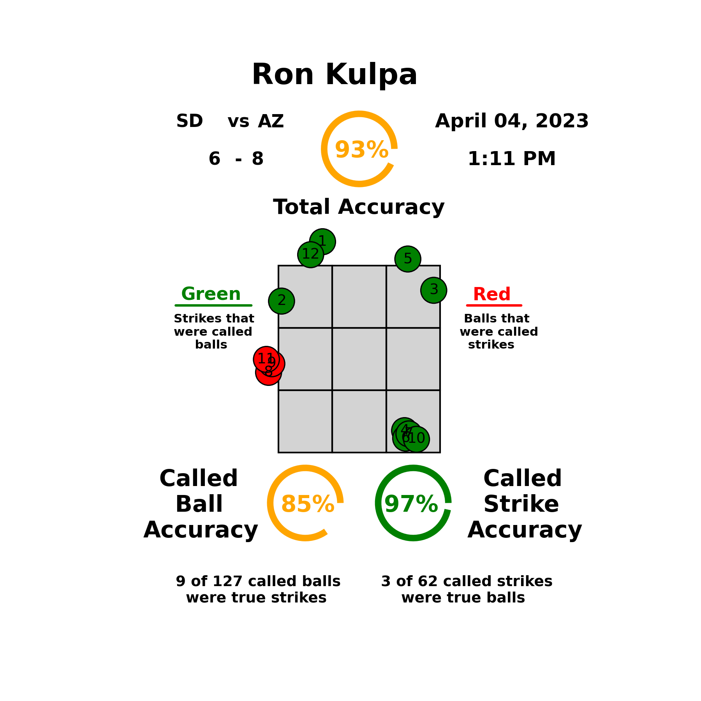
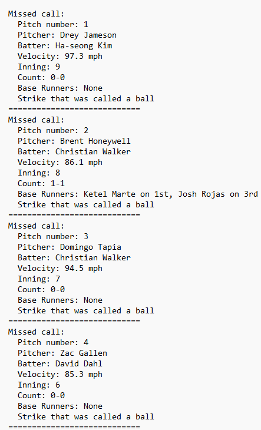

In the world of Major League Baseball (MLB), the role of an umpire is crucial. Umpires are responsible for making split-second decisions that can change the course of a game. Their judgment on whether a pitch is a ball or a strike has a significant impact on the outcome of each at-bat and, ultimately, the entire game. To better understand the accuracy of these calls, we can turn to data analysis and Python programming.
To begin our analysis, we need access to MLB pitch data. Fortunately, MLB provides comprehensive data through Statcast. You can access pitch-level data, including information about the pitch type, location, speed, and more using pybaseball's library. For our analysis, we'll use Python to fetch and process this data. The Pandas library is particularly useful for data manipulation and analysis. After loading the data into a Pandas DataFrame, you can filter it by game, season, or umpire to focus on the specific dataset you want to analyze.

Once you have the pitch data, the next step is to visualize it. To understand the accuracy of umpire calls, we'll plot each pitch on a strike zone image. The strike zone in baseball is a three-dimensional space defined by the area over home plate and between the batter's knees and armpits. Typically, it's displayed as a two-dimensional rectangle. To plot the pitch data on a strike zone image, you can use Python libraries like Matplotlib. Matplotlib provides powerful customization options for creating various types of plots, making it suitable for our purposes.
Before plotting the pitch data, you'll need a strike zone image. You can find strike zone images online, or you can create your own using graphic design software. Ensure that the image you choose or create accurately represents the strike zone dimensions as defined by MLB rules. Once you have the image, you can overlay it with a coordinate grid that corresponds to the pitch data's x and z coordinates. This will help align the pitch locations with the strike zone image.
With the strike zone image and coordinate grid in place, it's time to plot the pitch data. For each pitch in your dataset, you'll convert its x and z coordinates to the corresponding position on the strike zone image and mark it accordingly. This can be done using Matplotlib's scatter plot function. Additionally, you can use different colors or markers to distinguish between balls and strikes. For example, you might use red dots for pitches called as balls and green dots for pitches called as strikes.
Now that you have a visual representation of the pitch data, you can start analyzing umpire performance. To do this, you need to determine whether each pitch was correctly called by the umpire based on its location relative to the strike zone. You can define a simple rule for this analysis, such as considering any pitch that crosses the strike zone as a correct call and any pitch outside the strike zone as an incorrect call. By comparing the umpire's calls to this rule, you can calculate their accuracy percentage.
To grade umpires, you can use the accuracy percentage as a primary metric. However, it's essential to consider other factors that may affect umpire performance. These factors might include the pitcher's control, the batter's stance, or the count in the at-bat. You can adjust the grading system to account for these factors by using advanced statistical methods. For example, you could implement logistic regression or machine learning algorithms to build a predictive model for umpire calls based on pitch location and other relevant variables. Additionally, you may want to categorize umpires into different tiers, such as excellent, above average, average, below average, and poor, based on their performance metrics. This categorization can provide a more nuanced evaluation of their skills.

After grading umpires, you can draw valuable insights from your analysis. You may discover trends in umpire accuracy based on their experience, the stadiums they work in, or the teams involved in the games. These insights can be used to inform discussions about umpire performance and potentially influence decisions about their assignments.
While data analysis and Python programming offer powerful tools for evaluating umpire performance, it's essential to acknowledge the challenges and limitations of this approach. One significant challenge is the subjectivity of umpire calls. The strike zone can vary from batter to batter and game to game, making it difficult to establish a single "correct" call for every pitch. Umpires must consider factors such as the batter's height, stance, and the trajectory of the pitch when making their decisions. Another limitation is the availability and quality of pitch data. Some pitches may not have precise location data, which can affect the accuracy of the analysis. Additionally, pitch-tracking technology may have limitations in accurately capturing pitch movement, further complicating the assessment of umpire calls.
As technology continues to advance and more data becomes available, there are exciting opportunities for further research in the field of umpire performance analysis. Some potential areas for exploration include: Incorporating pitch movement data: Analyzing how the movement of pitches affects umpire calls and whether certain umpires are better at judging movement. Contextual analysis: Considering the game situation, such as the score, inning, and pitch count, to better understand the impact of umpire decisions. Player influence: Investigating whether specific pitchers or batters have a consistent impact on umpire calls and whether this varies among umpires.
Analyzing MLB umpire performance using pitch data and Python programming provides a data-driven approach to understanding their accuracy in calling balls and strikes. By visualizing pitch data on a strike zone image, grading umpires, and drawing insights, we gain a more comprehensive view of how well umpires perform their critical role in the game of baseball. While this blog post has provided an overview of the process, it's important to note that the analysis can be as simple or as complex as desired, depending on the depth of insights you aim to achieve. With the power of data and Python, we can continue to refine our understanding of the human element in America's favorite pastime and contribute to ongoing discussions about improving the accuracy of umpire calls in MLB.